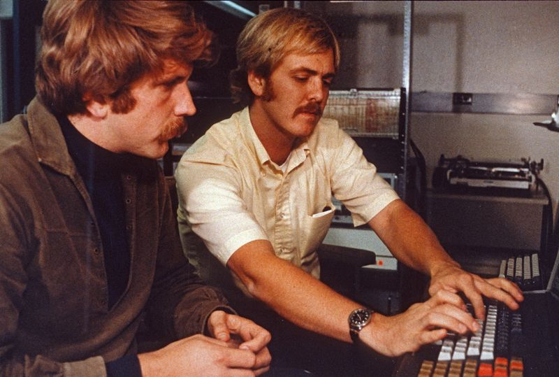

Diving club for the south-west UK - let's make a splash!

Robert Metcalfe was born in Brooklyn, New York, April 7th 1946. He is 75 Years old, and 76 in two weeks. He is an engineer and entrepreneur who was trained in MIT-Harvard University and later helped pioneer the Internet in 1970. His mentor was none other than Steve Jobs. Metcalfe co-invented the Ethernet, which enabled the networking of computers, while at Xerox PARC in 1973.
Metcalfe later co-founds 3Com, (a company that went public in 1984) which provides computer network products such as network interface controllers, switches, routers, wireless access points, ip voice systems, and intrusion detection systems, which relates to cybersecurity. Bob Metcalfe is now, and I think to this day, a Professor of Innovation at the University of Texas at Austin.
He once said that, “The world needs a better understanding of how to encourage innovation. And innovators need to get better at it. Sign me up.” He’s actually pretty funny, and uses satire to keep his interviews interesting. While he is renowned for his expertise and contributions to advocating the use of Ethernet, Metcalfe is notorious for his famously incorrect predictions. He said, and I quote, “The internet will catastrophically collapse in 1996.” He’s pretty funny, but I think he was serious on that one.